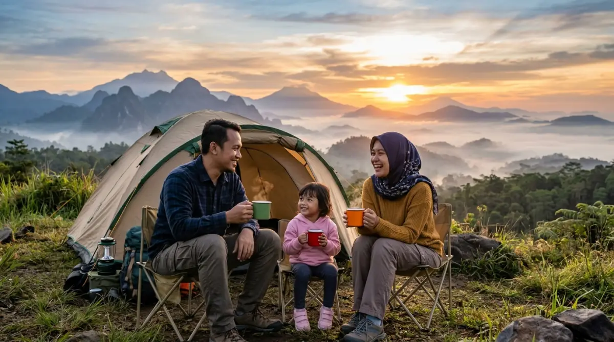

Pengalaman camping pertama yang nyaman — nikmati sunrise
spektakuler dan city light tanpa harus bersusah payah.
Pengalaman camping pertama yang nyaman — nikmati sunrise
spektakuler dan city light tanpa harus bersusah payah.
- Mengapa Pengalaman Camping Pertamamu Harus Nyaman?
- Selamat Tinggal Drama Mendirikan Tenda
- Fasilitas Lengkap: Mandi Air Hangat hingga Kasur Empuk
- Mengganti Pemandangan Layar Laptop dengan City Light
- Momen Emas: Berburu Sunrise dari Depan Tenda
- Persiapan Sederhana untuk Pemula dan Keluarga
- Saatnya Mengambil Keputusan
- FAQ
Pernahkah kamu membayangkan bangun tidur dengan pemandangan kabut tipis dan rona jingga matahari terbit, sementara malam sebelumnya kamu tertidur di bawah taburan bintang dan gemerlap lampu kota? Berapa kali rencana healing ke alam bebas berujung wacana hanya karena kamu malas membayangkan repotnya membawa tenda, memasak dengan peralatan seadanya, atau kebingungan mencari toilet bersih? Waktu terus berjalan, dan rutinitas kerja yang monoton akan terus menggerus energimu jika kamu tidak segera mengambil jeda.
Sayang sekali jika kamu melewatkan kesempatan merasakan pengalaman camping yang sebenarnya bisa dilakukan dengan sangat nyaman dan praktis. Saat ini, menikmati alam terbuka tidak lagi identik dengan bersusah payah. Mari ubah wacana itu menjadi kenyataan, karena pengalaman camping pertamamu memegang peranan krusial. Jika pengalaman pertama ini menyenangkan, kamu pasti akan ketagihan. Yuk, kita bahas cara mewujudkannya!
Mengapa Pengalaman Camping Pertamamu Harus Nyaman?
Banyak orang mundur teratur saat mendengar kata "berkemah" karena memori masa sekolah yang identik dengan tanah becek, ransel super berat, dan tidur beralaskan matras tipis yang membuat punggung pegal.
Padahal, alam bebas selalu punya cara magis untuk mereset pikiran kita yang sumpek. Sebagai seseorang yang sudah bertahun-tahun keluar-masuk hutan dan mencoba berbagai gaya berkemah, aku sangat merekomendasikan agar kamu tidak perlu memaksakan diri menjadi "survivor" di pengalaman pertamamu.
Bayangkan seperti ini: sehari-hari kamu sudah cukup lelah memikul beban target KPI atau rentetan deadline laporan bulanan yang seolah tidak ada habisnya. Saat akhir pekan tiba, kamu tentu tidak ingin memindahkan beban pikiran tersebut menjadi ransel carrier seberat 15 kilogram.
Di sinilah konsep perkemahan modern atau yang sering disebut glamping (glamorous camping) dan campervan hadir sebagai solusi.
Selamat Tinggal Drama Mendirikan Tenda
Fokus utamamu adalah menikmati alam, bukan berdebat dengan pasangan atau keluarga tentang cara memasang pasak dan merangkai kerangka tenda. Saat ini, banyak sekali pengelola wisata di dataran tinggi yang menawarkan paket berkemah di mana tenda sudah berdiri tegak menyambutmu. Kamu hanya perlu datang membawa pakaian ganti, perlengkapan mandi, dan camilan favorit.
Ketiadaan drama mendirikan tenda ini sangat krusial. Kamu tidak perlu khawatir tendamu rubuh saat angin kencang atau bocor saat hujan turun. Pengelola yang profesional biasanya menggunakan tenda berbahan tebal (seperti bahan kanvas cotton bell) yang didesain khusus untuk menahan cuaca pegunungan. Keamanan dan kenyamanan ini adalah fondasi penting agar kamu bisa merasa tenang dan benar-benar menikmati waktu luang.
Fasilitas Lengkap: Mandi Air Hangat hingga Kasur Empuk
Kenyamanan tidak berhenti pada tenda yang sudah berdiri. Masalah terbesar bagi pemula—terutama wanita dan anak-anak—adalah urusan sanitasi. Kabar baiknya, area perkemahan modern kini sudah dilengkapi dengan toilet duduk yang bersih, air mengalir, dan water heater. Kamu tidak perlu lagi menggigil kedinginan saat harus membersihkan diri di pagi hari.
Di dalam tenda, kamu tidak akan menemukan matras keras berbahan spons. Sebagai gantinya, kasur springbed empuk lengkap dengan seprai bersih, bantal, dan selimut tebal bed cover sudah tertata rapi. Bahkan, beberapa tempat menyediakan colokan listrik dan akses Wi-Fi. Ya, kamu tetap bisa terhubung jika memang ada urusan mendesak, meskipun saranku: matikan saja notifikasi pekerjaanmu sejenak.
Mengganti Pemandangan Layar Laptop dengan City Light
Mari kita bicara tentang malam hari di area perkemahan dataran tinggi. Setelah matahari terbenam, suhu udara akan turun secara perlahan. Ini adalah waktu terbaik untuk mengenakan jaket tebalmu, menyeduh secangkir kopi panas atau bandrek, dan duduk santai di kursi lipat depan tenda.
Jika biasanya matamu lelah menatap pendaran cahaya dari layar laptop atau smartphone yang berisi email pekerjaan, malam ini pemandangannya berbeda. Dari ketinggian bukit, kamu akan disuguhi hamparan lampu kota (city light) yang berkelap-kelip layaknya lautan kunang-kunang. Mengamati lalu lintas dan lampu-lampu gedung dari kejauhan memberikan perspektif baru. Kesibukan kota yang biasanya membuat stres, tiba-tiba terlihat begitu tenang dan damai dari atas sini.
Berdasarkan obrolanku dengan banyak pengelola camping ground di kawasan Bandung, Bogor, hingga Malang, daya tarik city light ini adalah magnet utama bagi warga urban. Duduk mengelilingi api unggun kecil yang sudah disiapkan pengelola, memanggang marshmallow atau sosis bersama keluarga, sambil mendengarkan suara jangkrik adalah terapi mental yang sangat efektif.
Tidak ada bos yang menelepon, tidak ada kemacetan klakson; hanya kamu, orang-orang tersayang, dan obrolan hangat yang mengalir tanpa beban.

Momen kebersamaan keluarga saat camping — obrolan hangat di tengah alam terbuka lebih bermakna dibanding kesibukan layar gadget.Momen Emas: Berburu Sunrise dari Depan Tenda
Jika malam hari diisi dengan ketenangan, maka pagi hari adalah tentang harapan baru. Bangun pagi saat liburan biasanya menjadi hal yang menjengkelkan, apalagi jika kamu terbiasa dipaksa bangun oleh alarm untuk mengejar meeting pagi. Namun, percayalah, bangun pagi di alam bebas adalah cerita yang sama sekali berbeda.
Di area perkemahan dataran tinggi, udaranya sangat bersih. Aroma embun yang menempel di rerumputan bercampur dengan wangi getah pinus menciptakan aromaterapi alami yang tidak bisa dibeli di mal. Kamu cukup membuka ritsleting pintu tendamu, dan voila, pertunjukan alam dimulai.
Kamu tidak perlu melakukan trekking mendaki gunung berjam-jam untuk melihat matahari terbit. Dari depan tendamu yang hangat, kamu bisa menyaksikan perubahan warna langit dari biru gelap, ungu, merah muda, hingga perlahan menjadi emas yang menyilaukan. Kabut tipis yang bergerak pelan di bawah bukit sering kali menciptakan ilusi seolah kamu sedang berada di atas "negeri di atas awan".
Momen sunrise ini sering kali menjadi titik balik bagi para pemula. Perasaan takjub melihat kebesaran alam sering kali sukses menghapus segala sisa penat di kepala. Jangan lupa siapkan kameramu, tapi ingat, pastikan matamu sendiri yang lebih banyak menangkap momen tersebut ketimbang lensa kameramu.
"Menikmati pengalaman camping pertama yang nyaman, menatap city light di malam hari, dan menyambut sunrise di pagi hari bukan sekadar soal liburan. Ini adalah investasi untuk kewarasan pikiranmu."
— Refleksi Pelancong ModernPersiapan Sederhana untuk Pemula dan Keluarga
Meskipun segala fasilitas sudah disiapkan dengan matang, ada beberapa hal kecil yang tetap harus kamu rencanakan. Kredibilitas sebuah rencana perjalanan sangat ditentukan oleh persiapan dasarnya.
Pilih Lokasi Dataran Tinggi yang Aksesibel
Jangan tergiur dengan foto bagus di media sosial tanpa mengecek akses jalannya. Untuk pengalaman camping pertama, pastikan lokasi yang kamu pilih bisa diakses langsung oleh mobil standar (bukan harus mobil 4x4) hingga ke area parkir yang dekat dengan tenda.
Cari ulasan dari pengunjung sebelumnya mengenai kondisi jalan—apakah aspalnya mulus, jalurnya tidak terlalu curam, dan apakah mudah ditemukan di aplikasi navigasi.
Pakaian Tepat untuk Cuaca Pegunungan
Jangan salah kostum. Tinggalkan celana jeans ketatmu karena bahan ini justru menyerap dingin dan sulit kering jika terkena embun. Terapkan prinsip layering (berpakaian berlapis). Gunakan kaus berbahan katun atau dry-fit di bagian dalam, lapisi dengan sweter berbahan fleece, dan gunakan jaket penahan angin (windbreaker) sebagai lapisan terluar.
Untuk tidur, pastikan membawa kaus kaki tebal dan penutup kepala (kupluk atau beanie). Menjaga tubuh tetap hangat adalah syarat wajib untuk tidur nyenyak di alam bebas.
Bawa Obat-obatan Pribadi dan Hindari Berekspektasi Berlebihan
Meskipun fasilitasnya setara hotel, ingatlah bahwa kamu tetap berada di alam terbuka. Suara serangga, angin kencang, atau bahkan anjing kampung yang sesekali menggonggong adalah hal yang wajar. Bawalah obat-obatan pribadi, tolak angin, dan losion anti nyamuk. Siapkan mentalmu untuk lebih toleran terhadap hal-hal kecil yang mungkin berada di luar kendali pengelola.
Saatnya Mengambil Keputusan
Kesibukan tidak akan pernah ada habisnya. Akan selalu ada project baru, siklus tagihan baru, dan masalah-masalah harian yang menuntut perhatianmu. Jika kamu terus menunda keinginan untuk mendekatkan diri dengan alam menunggu "waktu yang tepat" atau "pekerjaan senggang", percayalah, waktu itu mungkin tidak akan pernah datang sampai kamu menyadari bahwa kamu sudah terlalu lelah untuk pergi.
Menikmati pengalaman camping pertama yang nyaman, menatap city light di malam hari, dan menyambut sunrise di pagi hari bukan sekadar soal liburan. Ini adalah investasi untuk kewarasan pikiranmu.
Kamu bekerja keras setiap hari, maka kamu berhak memberikan dirimu sendiri sebuah jeda yang berkualitas. Pesan tendamu akhir pekan ini, kemas pakaian secukupnya, dan buktikan sendiri betapa melegakannya menghirup udara segar tanpa harus memikirkan kerumitan memasang pasak tenda.
FAQ — Pengalaman Camping Pertama